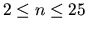
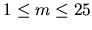

| The Settlers of Catan |
Within Settlers of Catan, the 1995 German game of the year, players attempt to dominate an island by building roads, settlements and cities across its uncharted wilderness.
You are employed by a software company that just has decided to develop a computer version of this game, and you are chosen to implement one of the game's special rules:
When the game ends, the player who built the longest road gains two extra victory points.
The problem here is that the players usually build complex road networks and not just one linear
path. Therefore, determining the longest road is not trivial (although human players usually see it
immediately).
Compared to the original game, we will solve a simplified problem here: You are given a set of
nodes (cities) and a set of edges (road segments) of length 1 connecting the nodes.
The longest road is defined as the longest path within the network that doesn't use an edge twice.
Nodes may be visited more than once, though.
Example: The following network contains a road of length 12.
o o -- o o
\ / \ /
o -- o o -- o
/ \ / \
o o -- o o -- o
\ /
o -- o
The first line of each test case contains two integers: the number of nodes n ( ) and the number of edges m ( ). The next m lines describe the m edges. Each edge is given by the numbers of the two nodes connected by it. Nodes are numbered from 0 to n-1. Edges are undirected. Nodes have degrees of three or less. The network is not neccessarily connected.
Input will be terminated by two values of 0 for n and m.
3 2 0 1 1 2 15 16 0 2 1 2 2 3 3 4 3 5 4 6 5 7 6 8 7 8 7 9 8 10 9 11 10 12 11 12 10 13 12 14 0 0
2 12